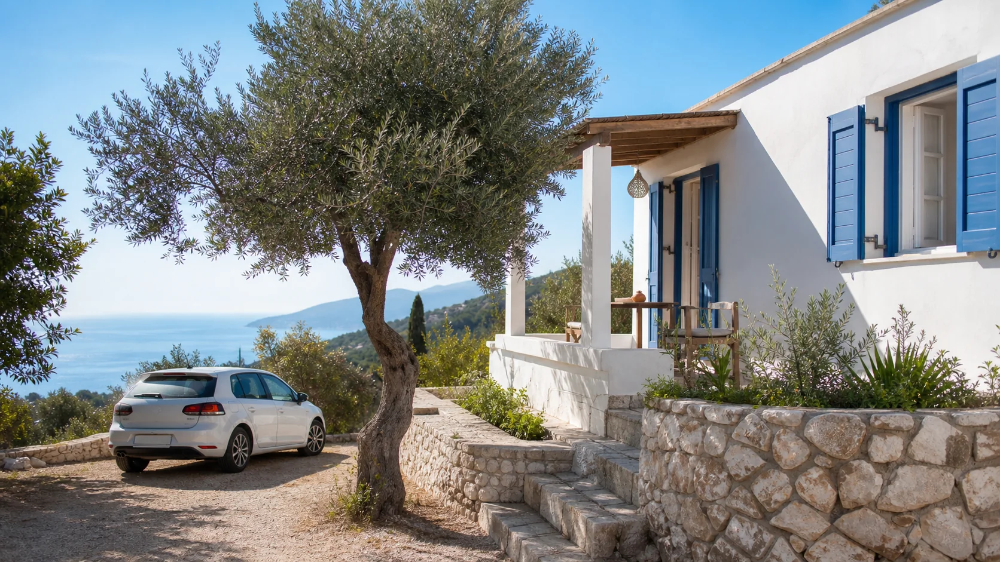
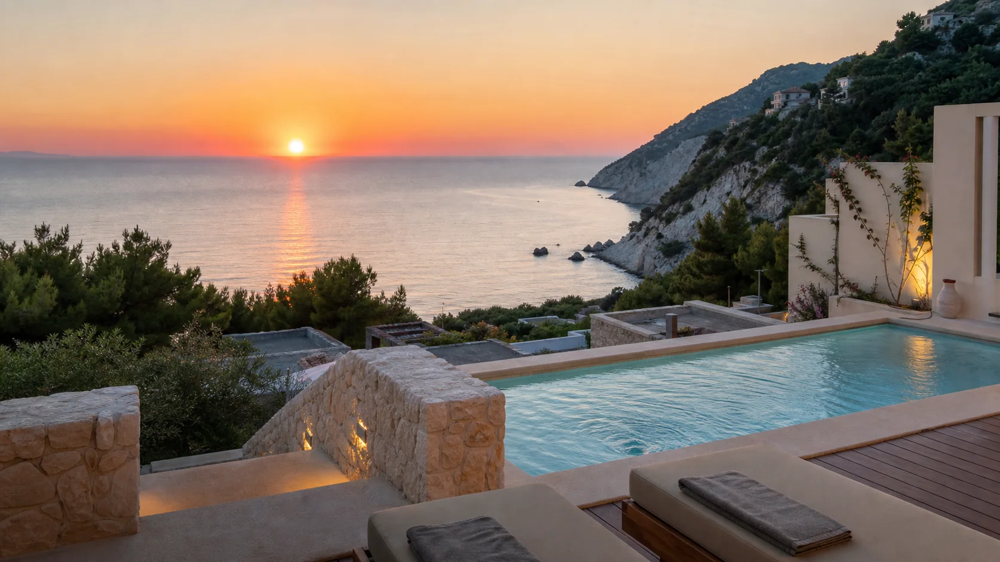
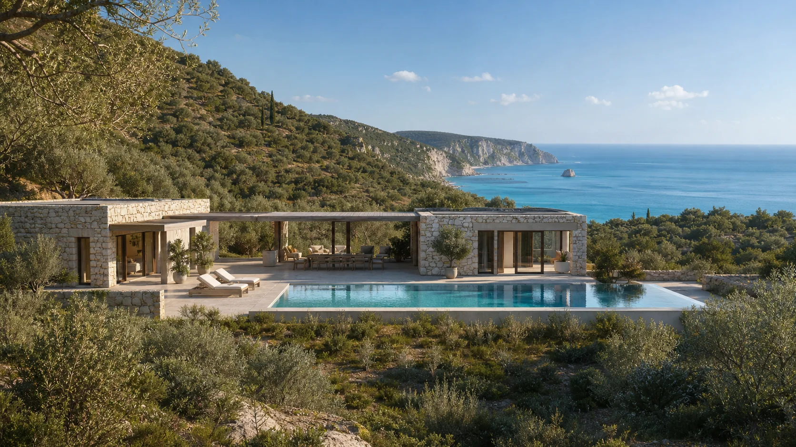

Niektoré grécke ostrovy lákajú jednou slávnou plážou. Lefkada ich ponúka hneď niekoľko – Kathisma, Mylos, Egremni, Porto Katsiki či Pefkoulia. K tomu pridáva dramatické biele útesy, tyrkysové Iónske more, zelené vnútrozemie, horské dedinky a západy slnka, pre ktoré netreba cestovať až na Santorini.
Lefkada má ešte jednu praktickú výhodu: s pevninou ju spája most. Ak priletíte na letisko Aktion pri Preveze a požičiate si auto, na ostrov sa dostanete bez trajektu. Práve prenajaté auto umožní každý deň objaviť inú časť ostrova. Discover Greece – Lefkada
Prečo som vybral práve Agios Nikitas
Pri hľadaní ubytovania na plánovanú cestu na Lefkadu som nechcel klasický rezort, v ktorom by sme zostali celý týždeň pri jednom bazéne. Hľadám miesto, ktoré môže poslúžiť ako východiskový bod na výlety autom a zároveň ponúkne príjemné večery po návrate z pláže.
Agios Nikitas sa nachádza na západnom pobreží, neďaleko pláží Kathisma, Mylos a Pefkoulia. Samotná dedinka má malú pláž, pešiu zónu, taverny, kaviarne, bary a obchody. Do mesta Lefkada je to približne 11 kilometrov.
Vďaka tomu nemusíte každý večer cestovať na druhú stranu ostrova, no počas dňa máte autom na dosah najkrajšie pláže západného pobrežia.
Prečo práve tieto tri typy ubytovania
Nevyberal som tri takmer rovnaké hotely. Zámerne som porovnal tri rozdielne možnosti:
cenovo dostupné ubytovanie so záhradou a kuchyňou,
apartmán s bazénom a panoramatickým výhľadom,
prémiovú vilu s dvoma spálňami, dvoma kúpeľňami a súkromným bazénom.
Všetky tri sú vhodné pre cestovateľov s autom, ale každé osloví inú skupinu. Zároveň je dôležité povedať, že nejde o klasické hotely s polpenziou. Sú to ubytovania orientované najmä na samostatné stravovanie a slobodné spoznávanie ostrova.
Poznámka Letom po Stredomorí: ide o AI cestovateľský prieskum, nie o osobnú skúsenosť s pobytom v týchto ubytovaniach.
Rýchle porovnanie
| Kategória | Ubytovanie | Usporiadanie pre 4 osoby | Najväčšia výhoda | Hlavný kompromis |
|---|---|---|---|---|
| Dostupná voľba | Anthia private studio | 1 spoločná spacia časť, 1 kúpeľňa | Cena, záhrada a parkovanie | Takmer žiadne súkromie medzi hosťami |
| Najlepší pomer ceny a zážitku | Melikiron Luxury Apartments | 1 spálňa, obývacia izba s pohovkou, 1 kúpeľňa | Bazén, výhľad a západy slnka | Auto je prakticky nevyhnutné |
| Prémiová voľba | Milos Paradise Luxury Villas | 2 spálne, 2 kúpeľne | Súkromný bazén a výhľad na Mylos | Vysoká cena a veľa schodov |
Koľko stojí týždeň pre štyroch dospelých
Keďže dnes je 22. júla 2026, porovnanie sa týka sezóny 2027. Ide o ceny za sedem nocí pre štyroch dospelých zobrazené pri kontrole ponúk, nie o garantovaný cenník.
| Termín – 7 nocí | Anthia | Melikiron | Milos Paradise |
|---|---|---|---|
| 22. – 29. máj 2027 | približne 1 058 € (264 €/os.) | približne 1 596 € (399 €/os.) | približne 3 098 € (774 €/os.) |
| 5. – 12. jún 2027 | približne 1 192 € (298 €/os.) | približne 2 156 € (539 €/os.) | približne 3 763 € (941 €/os.) |
| 3. – 10. júl 2027 | približne 1 358 € (340 €/os.) | približne 2 296 € (574 €/os.) | približne 5 226 € (1 306 €/os.) |
| 7. – 14. august 2027 | približne 1 392 € (348 €/os.) | približne 2 506 € (627 €/os.) | približne 6 090 € (1 523 €/os.) |
| 4. – 11. september 2027 | približne 1 058 € (264 €/os.) | približne 2 156 € (539 €/os.) | približne 4 048 € (1 012 €/os.) |
Ceny nezahŕňajú letenky, prenájom auta ani stravu. Pred rezerváciou treba skontrolovať konečnú sumu, miestne poplatky, storno podmienky a presný typ ubytovacej jednotky.
Najvýraznejšie sa sezóna prejavuje pri Milos Paradise. Augustový týždeň vychádza takmer dvojnásobne drahšie ako májový. Pri Melikirone je august približne o 57 % drahší než máj. Anthia má z trojice najmenšie sezónne rozdiely.
1. Dostupná voľba: Anthia private studio

Pozrieť Anthia na Booking.com
Pozrieť Anthia na Airbnb
Anthia nie je klasická hotelová izba. Ide o samostatné približne 50 m² veľké štúdio umiestnené na pozemku so záhradou. Hostia majú k dispozícii kuchyňu, klimatizáciu, Wi-Fi, práčku, vonkajšie posedenie, gril, ležadlá, hojdaciu sieť a súkromné parkovanie.
Ubytovanie leží približne 1,5 kilometra od pláže Kathisma a 1,9 kilometra od centra a pláže Agios Nikitas. Pešo sa tam dostať dá, ale pri horúčave, nákupoch alebo večernom návrate je auto pohodlnejšie.
Ako sa tu vyspia štyria dospelí
Toto je najdôležitejší kompromis. Anthia nemá dve samostatné spálne. Uvádza jednu manželskú posteľ, jedno samostatné lôžko a rozkladaciu pohovku v jednej spacej časti.
Pre rodinu alebo veľmi dobrých priateľov môže byť takéto usporiadanie prijateľné. Pre dva páry, ktoré chcú večer súkromie, by som Anthiu neodporučil bez dôkladného zváženia.
V popise na Airbnb sa navyše uvádza, že ceny počas mája a júna sú určené pre dve osoby. Booking pri našom vyhľadávaní zobrazil ponuku aj pre štyroch dospelých, preto treba pri rezervácii cez Airbnb alebo priamo u majiteľa písomne potvrdiť konečnú cenu pre celú skupinu.
Stravovanie
Anthia nemá vlastnú reštauráciu ani hotelové raňajky. Výhodou je dobre vybavená kuchyňa a vonkajší gril. Základný nákup možno urobiť v Agios Nikitas, väčšie zásoby sa oplatí priniesť autom z Lefkady.
Na večeru môžete zájsť do centra Agios Nikitas alebo na pláž Kathisma, kde fungujú taverny, kaviarne a plážové podniky.
Čo hovoria recenzie
Pri kontrole malo ubytovanie na Bookingu hodnotenie približne 9,8 z 10 z 23 recenzií a na Airbnb 4,8 z 5 z 15 recenzií.
Hostia najčastejšie vyzdvihujú:
veľkú a príjemnú záhradu,
pokoj napriek relatívnej blízkosti hlavnej cesty,
vybavenú kuchyňu,
čistotu a pohodlie,
ochotnú hostiteľku,
vhodnosť pre hostí so psom.
Počet recenzií je však výrazne nižší než pri Melikirone. Na Airbnb má navyše čistota čiastkové hodnotenie 4,3 z 5, zatiaľ čo recenzie na Bookingu čistotu prevažne chvália. Pred rezerváciou preto odporúčame prečítať si najnovšie hodnotenia na oboch platformách.
Prečo vybrať práve Anthiu
Anthia dáva zmysel, ak chcete väčšinu dňa cestovať po ostrove, potrebujete kuchyňu a parkovanie a nechcete za ubytovanie zaplatiť viac ako za letenky a auto dohromady.
Je to najlepšia voľba pre cestovateľov, ktorí uprednostnia cenu, záhradu a praktické vybavenie pred výhľadom na more, bazénom a súkromím medzi jednotlivými hosťami.
2. Najlepší pomer ceny a zážitku: Melikiron Luxury Apartments

Oficiálna stránka Melikiron Luxury Apartments
Pozrieť Melikiron na Booking.com
Melikiron stojí vo vyvýšenej polohe južne od Agios Nikitas. Práve poloha je jeho najväčšou výhodou aj nevýhodou. Z apartmánov, bazéna a baru sa otvára panoramatický výhľad na Iónske more a západ slnka. Bez auta je však každodenný presun do dediny alebo na pláž nepraktický.
Pre štyroch dospelých treba vybrať jeden z apartmánov Bassilisa alebo Kifinas – Deluxe Apartment. Má približne 45 m², samostatnú spálňu s veľkou manželskou posteľou a obývaciu izbu s rozkladacou pohovkou.
Súčasťou vybavenia je kuchyňa s rúrou, varnou doskou, chladničkou, kávovarom a ďalším riadom, klimatizácia, súkromná kúpeľňa, terasa alebo balkón a výhľad na more aj bazén. Apartmány pre štyroch sa nachádzajú na prvom poschodí a sú prístupné po schodoch. Podrobný popis apartmánu Bassilisa
Poloha pri plážach
Oficiálna stránka uvádza približne tieto vzdialenosti:
Kathisma – 2,1 km,
Mylos – 2,3 km,
centrum Agios Nikitas – 2,6 km,
Avali – 8,7 km,
Porto Katsiki – približne 28 km.
Práve tu začína dávať prenajaté auto plný zmysel. Ráno môžete vyraziť na inú pláž, popoludní sa vrátiť k bazénu a večer sledovať západ slnka z terasy.
Stravovanie
Melikiron nemá klasickú hotelovú polpenziu. Každý apartmán má vlastnú kuchyňu. Pri bazéne však funguje bar a v ponuke ubytovania sa uvádza aj snack bar, takže na ľahké občerstvenie alebo nápoj pri bazéne nemusíte odchádzať.
Na plnohodnotnú večeru sa dá zájsť do Agios Nikitas, na Kathismu alebo do niektorej z reštaurácií vo vnútrozemí. Ubytovanie odporúča napríklad reštauráciu Amente vzdialenú približne dva kilometre a horskú reštauráciu Rachi pri dedine Exanthia, približne 8,7 kilometra od Melikironu. Čo sa nachádza v okolí Melikironu
Čo hovoria recenzie
Pri kontrole dosahoval Melikiron na Bookingu hodnotenie približne 9,5 z 10 z viac ako 210 recenzií.
Najčastejšie sa opakujú pochvaly na:
mimoriadny výhľad a západy slnka,
čistotu apartmánov,
pokojné prostredie,
bazén,
vybavenie kuchyne,
prístup a ochotu hostiteľov.
Najdôležitejšia výhrada sa týka polohy. Viacerí hostia upozorňujú, že ubytovanie stojí vysoko nad pobrežím a auto alebo skúter sú potrebné aj na zdanlivo krátke presuny. Ojedinele sa spomína menšia kúpeľňa alebo tvrdšia posteľ. Overené recenzie Melikiron na Booking.com
Prečo vybrať práve Melikiron
Melikiron podľa mňa predstavuje najsilnejší kompromis medzi cenou a dovolenkovým zážitkom. Ponúka bazén, moderné vybavenie, parkovanie a jeden z najväčších bonusov západnej Lefkady – západ slnka priamo z terasy.
Nie je však ideálny pre dva páry, ktoré chcú dve rovnocenné spálne. Jedna dvojica bude spať v obývacej izbe na pohovke.
3. Prémiová voľba: Milos Paradise Luxury Villas

Oficiálna stránka Milos Paradise Luxury Villas
Pozrieť Milos Paradise na Booking.com
Milos Paradise tvoria štyri kamenné vily postavené nad plážou Mylos. Každá má vlastný bazén, terasu, výhľad na more a prístup k pláži. Zo všetkých troch porovnávaných možností ponúka najviac súkromia a zároveň najlepšie usporiadanie pre štyroch dospelých.
Napríklad Villa Iris má približne 65 m², dve samostatné spálne a dve kúpeľne. V jednej spálni je manželská posteľ, v druhej dve samostatné lôžka. K dispozícii je obývacia izba, plne vybavená kuchyňa, umývačka riadu, práčka, klimatizácia a vonkajší bazén s plochou približne 30 m². Upratovanie sa podľa oficiálneho popisu vykonáva každé tri dni. Podrobný popis Villa Iris
Areál má vlastné parkovisko. Medzi parkoviskom, vilami a plážou však treba počítať so schodmi a strmým terénom.
Prístup na pláž Mylos
Oficiálna stránka uvádza priamy prístup z areálu na pláž. V recenziách hostia potvrdzujú, že chodník je pomerne krátky, ale strmý a návrat nahor môže byť fyzicky náročný.
Pre ľudí s obmedzenou pohyblivosťou, problémami s kolenami alebo pre rodiny s kočíkom nemusí byť Milos Paradise vhodnou voľbou. Pri príchode s ťažkými kuframi hostia oceňujú pomoc personálu.
Stravovanie
Vily majú plne vybavené kuchyne a sú určené aj na samostatné stravovanie. Raňajky alebo polpenzia sa v oficiálnom popise neuvádzajú ako štandardná súčasť pobytu.
Booking aktuálne medzi vybavením uvádza reštauráciu, bar a snack bar, ale oficiálna stránka presne nevysvetľuje rozsah ani sezónnosť týchto služieb. Ak s nimi počítate, odporúčame si pred rezerváciou overiť, čo je počas konkrétneho termínu otvorené.
Do reštaurácií v Agios Nikitas sa podľa recenzií dá dostať približne za 15 minút pešo. Treba však počítať s kopcovitým terénom. Na bežné nákupy a výlety po ostrove zostáva auto veľmi užitočné.
Čo hovoria recenzie
Pri kontrole malo Milos Paradise na Bookingu hodnotenie približne 9,8 z 10 z 56 recenzií. Na Airbnb dosahovala jedna z víl hodnotenie 4,88 z 5 zo 41 recenzií.
Hostia najčastejšie chvália:
výhľad na pláž Mylos,
súkromný bazén,
západy slnka,
čistotu a súkromie,
dve samostatné spálne,
prístup hostiteľa,
rýchly prístup k jednej z najkrajších pláží ostrova.
Takmer všetky praktické výhrady smerujú k schodom a strmému chodníku. Jeden z hostí spomína aj množstvo ôs pri ceste k pláži. Ďalší upozorňuje, že auto je potrebné na pohodlné spoznávanie ostrova a väčšie nákupy. Overené recenzie Milos Paradise na Booking.com
Prečo vybrať práve Milos Paradise
Milos Paradise nie je iba nocľah. Je to ubytovanie, ktoré sa stáva samostatnou súčasťou dovolenky. Ak cestujú dva páry, dve spálne a dve kúpeľne môžu byť oveľa dôležitejšie než najnižšia cena.
Najväčší zmysel má v máji, júni alebo septembri. V auguste už cena presahuje 6 000 eur za týždeň a pomer ceny a úžitku sa výrazne mení.
Ktoré pláže navštíviť z Agios Nikitas
Agios Nikitas
Malá pláž na konci pešej zóny je vhodná na prvý alebo posledný deň pobytu. Výhodou sú taverny, kaviarne a obchody priamo v dedine. V hlavnej sezóne treba počítať s obmedzeným parkovaním, pretože centrum je prevažne bez áut.
Mylos
Jedna z najkrajších pláží v okolí. Z Agios Nikitas sa k nej dá dostať loďkou, keď to umožňuje počasie, alebo chodníkom cez kopec. Verejná pešia trasa meria približne 1,5 kilometra, prekonáva okolo 100 výškových metrov a môže trvať asi 30 minút. Zostup aj návrat sú strmšie, preto sú vhodné pevnejšie topánky. Lefkada Trails – cesta na Mylos
Kathisma
Najpraktickejšia veľká pláž v okolí. Je dostupná autom, ponúka parkovanie, plážové bary, reštaurácie, ležadlá aj vodné aktivity. Je vhodná na deň, keď nechcete riešiť turistický chodník alebo stovky schodov. Pri silnejšom vetre však môžu byť na západnom pobreží výrazné vlny. Discover Greece – Kathisma
Pefkoulia
Nachádza sa niekoľko kilometrov severne od Agios Nikitas. Je dlhšia, lemovaná zeleňou a ponúka viac priestoru než malá dedinská pláž. Hodí sa aj na kratšie kúpanie počas cesty do mesta Lefkada.
Avali, Kavalikefta a Megali Petra
Tieto pláže pri Kalamitsi pôsobia divokejšie a menej rezortne. Cesta vedie cez úzke a kľukaté úseky, preto sa oplatí vyraziť skoro a nechať si dostatočnú časovú rezervu. Megali Petra zaujme veľkými skalami a dramatickou scenériou. Lefkada Slow Guide – Megali Petra
Porto Katsiki
Najznámejšia pláž Lefkady leží pod vysokým bielym útesom. Z parkoviska k nej vedie približne 100 schodov. Počas leta je najlepšie prísť skoro ráno, priniesť si vodu a nespoliehať sa na úplné služby priamo na pláži. Discover Greece – Porto Katsiki
Egremni
Približne dvojkilometrová pláž patrí medzi najpôsobivejšie na ostrove. Prístup po súši zahŕňa viac ako 300 schodov a dlhší presun od parkoviska. Návrat počas horúčavy môže byť náročný. Pohodlnejšou alternatívou je lodný výlet z Vasiliki alebo Nidri. Discover Greece – najkrajšie grécke pláže
Mikros Gialos alebo Agiofili
Ak je západné pobrežie príliš rozbúrené, oplatí sa vyraziť na celodenný výlet na juh alebo juhovýchod ostrova. Mikros Gialos leží v chránenejšom zálive a býva vhodný na pokojnejšie kúpanie a šnorchlovanie. Agiofili pri Vasiliki ponúka priezračnú vodu a dá sa navštíviť autom alebo lodným taxíkom z prístavu.
Kde sa najesť v Agios Nikitas
Všetky tri ubytovania umožňujú vlastné varenie, no Agios Nikitas má dostatok možností aj na večeru. Podľa aktuálnych hodnotení cestovateľov patria medzi najčastejšie odporúčané podniky:
T’agnantio – grécka a stredomorská kuchyňa, ryby a morské plody,
Asperous – stredomorská kuchyňa a grilované morské plody,
Lefteris – souvlaki, šaláty, cestoviny a tradičné jedlá,
Portoni – domácejšie grécke jedlá,
To Steki alebo Join In – jednoduchšia a cenovo dostupnejšia večera,
Captain’s Corner alebo On the Rock – káva, nápoje a večerné posedenie.
Hodnotenia aj otváracie hodiny sa menia, preto si ich treba skontrolovať pred návštevou. Tripadvisor – reštaurácie v Agios Nikitas
Pri dlhšom pobyte by som kombinoval vlastné raňajky, ľahší obed pri pláži a večeru v dedine alebo v niektorej z horských reštaurácií s výhľadom na západ slnka.
Kedy sa na Lefkadu vybrať
Máj ponúka najnižšie ceny a pokojnejší ostrov. Treba však počítať s chladnejším morom a s tým, že nie všetky sezónne služby musia byť otvorené.
Jún predstavuje veľmi dobrý kompromis medzi cenou, počasím a dostupnosťou služieb.
Júl a august prinášajú najvyššie ceny, najväčšie horúčavy a najviac návštevníkov. Najvýraznejšie zdraženie vidieť pri súkromných vilách.
September je podľa mňa najsilnejší celkový termín. More býva po lete vyhriate, ostrov postupne pokojnejší a pri niektorých ubytovaniach sa cena vracia na júnovú alebo májovú úroveň. Ide však o praktické hodnotenie, nie o garanciu konkrétneho počasia.
Praktický verdikt Letom po Stredomorí
Ak je prioritou najnižšia cena, vybral by som Anthiu. Je praktická, pokojná a dobre vybavená, ale štyria dospelí musia akceptovať spoločnú spaciu časť.
Ak hľadáte najlepší pomer ceny a dovolenkového zážitku, najsilnejšie pôsobí Melikiron. Bazén, výhľad, kuchyňa a poloha pri západných plážach vytvárajú veľmi dobrý základ na týždeň s prenajatým autom.
Ak cestujú dva páry alebo štyria priatelia, ktorí chcú súkromie, najlepšie usporiadanie ponúka Milos Paradise. Dve spálne a dve kúpeľne sú veľkou výhodou, no treba akceptovať vysokú cenu a množstvo schodov.
Pre moju predstavu cesty na Lefkadu s autom by bol základným výberom Melikiron v júni alebo septembri. Ak by však cestovali dva páry a rozpočet by to umožňoval, Milos Paradise v máji alebo júni by priniesol podstatne viac súkromia a výnimočnejší zážitok.
Lefkada totiž nie je ostrov, na ktorom sa oplatí zostať sedem dní na jednej pláži. Najväčší zmysel dáva ubytovanie, ku ktorému sa večer radi vrátite, no ktoré vás ráno nebude brzdiť pri objavovaní ďalšej tyrkysovej zátoky.
Zdroje a metodika
Článok bol spracovaný 22. júla 2026 z oficiálnych stránok ubytovaní, aktuálne zobrazených ponúk Booking.com, recenzií Booking.com a Airbnb a z cestovateľských portálov Discover Greece, Lefkada Slow Guide, Lefkada Trails a Tripadvisor. Ceny, hodnotenia, dostupnosť, služby a otváracie hodiny sa môžu meniť. Pred rezerváciou odporúčame porovnať konečnú cenu na viacerých platformách a overiť podmienky priamo u ubytovania.